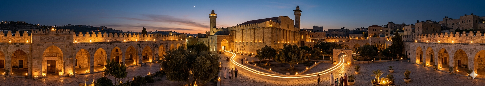
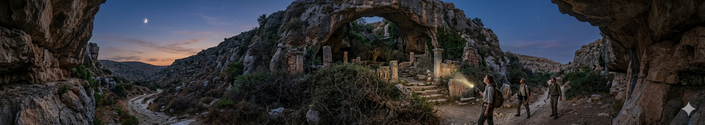
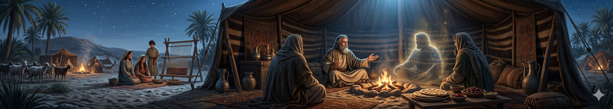

"في كل حكاية.. فلسطين"

أسطورة أنوار الحرم الإبراهيمي
يُحكى أن في ليالٍ معينة، خاصة عندما يسود الصمت التام، يظهر نور خافت داخل الحرم الإبراهيمي. كان الناس يعتقدون أن هذا النور ليس من مصابيح أو نار، بل هو “نور البركة” الذي يبقى في المكان منذ زمن الأنبياء. وبعض الحراس القدماء كانوا يقسمون أنهم رأوا وهجًا أبيض يملأ الساحات ثم يختفي فجأة.

أسطورة مغارة الخليل المفقودة
تقول الحكايات الشعبية إن تحت مدينة الخليل شبكة مغارات قديمة تمتد تحت الجبال. ويُقال إن بعضها لم يُكتشف حتى اليوم، وأنه في إحدى هذه المغارات يوجد “ممر طويل” يؤدي إلى أماكن مجهولة. وكان الرعاة يقولون إن أصواتًا خفيفة تُسمع أحيانًا من تحت الأرض كأن الأرض تتنفس. اقرا القصة

أسطورة ضيف إبراهيم الخفي
في التراث الشعبي، ارتبطت الخليل بقصة كرم النبي إبراهيم الخليل. ويُحكى أن ضيفًا غامضًا كان يظهر أحيانًا في بيوت الكرماء من أهل المدينة، يدخل دون أن يُرى، ويبارك الطعام ثم يختفي. وكان الناس يعتقدون أنه “ضيف خفي” يختبر قلوب الناس وكرمهم.